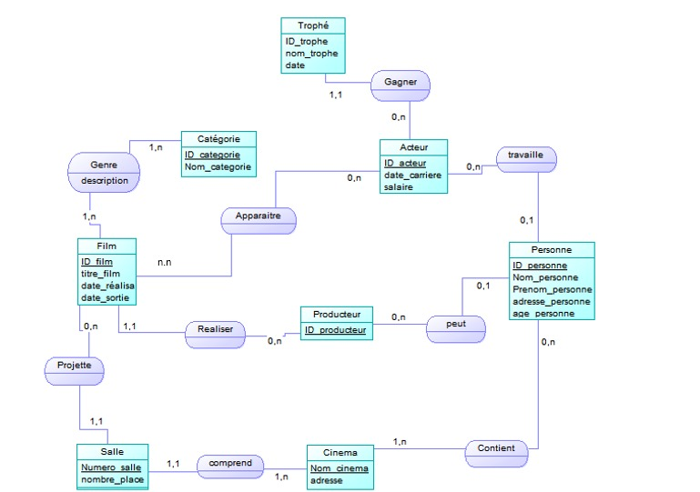

Notre projet consiste en la conception d’une
base de données dans un environnement cinématographique.
Nous souhaitons mettre en place une application qui permettra de connaître le nombre de personnes présentes dans un cinéma ainsi que le nombre de salles qui la compose , les films et leurs catégories qui sont diffusés dans le cinéma ainsi que le nombre d'acteurs qui la compose. l’application pourra reconnaître aussi le producteur de tel ou tel film ainsi que les acteurs
et les trophées remportés par chaque acteur .
Pour ce faire nous avons utilisés le MCD suivant :

Pour plus de details sur le MCD , veuillez cliquer sur le lien suivant: Rapport de projet partie1